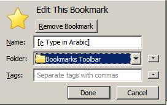

If you already know how to create a bookmarklet, bookmarklet this link:
[ع Type in Arabic].
NOTE: This is NOT same as clicking on the link.
Done! You can now go to
Using the transliteration
bookmarklet section for details on how to use the bookmarklet.
Google Transliteration offers an option for converting English
characters to the characters used in Arabic. This lets you type
Arabic words phonetically in English script and then have them
appear in Arabic. Note that this is not the same as translation -
it is the sound of the words that are converted from one alphabet to
the other, not their meaning. For example, typing "ta3reeb"
transliterates into Arabic as تعريب.
Ever visited a web-site and wanted to type in Arabic but did not
find transliteration feature there? Now you can use this bookmarklet to
type in Arabic on any web-site.
Transliteration
bookmarklet is a small
piece of code that you store in your browser. Once stored, you can type
in Arabic in any text box in any web-site of your choice. It works
on Google web-sites as well as other web-sites.
For example, you can use the bookmarklet to chat in Arabic in
Gmail or edit a Arabic
Wikipedia article. You can use it
to search for Arabic news in
Google
news or search for Arabic information on
Google search.
Note that you do not need to use the bookmarklet to
type in
Labs page or use in
iGoogle gadget. Transliteration is built-in in these web-sites.
This document gives information on how to use the bookmarklet tool to
type in Arabic. Transliteration bookmarklet is also available for
other languages. To know more, click on the appropriate link
below:
The transliteration bookmarklet is supported on Internet Explorer 6 and
above, Firefox 3 and above, Chrome 2
and Safari 4.
For detailed steps on storing the bookmarklet, use the appropriate link
below. Note that you need to follow these steps only once.
Note: Transliteration bookmarklet is supported on Internet Explorer
version 6 and above. If you come across font issues, see
this Wikipedia article for possible solutions.
Perform the following steps:
- Right-click this link:
[ع Type in Arabic].
- Select "Add to Favorites".

- Click "Yes" for the security message shown by Internet
Explorer.

- Choose "Links" as the directory where the bookmarklet should be
created.
- Click "Add".
After following the above steps, a bookmark with name
[ع Type in Arabic] should appear in the
Internet Explorer Links toolbar as follows:
Done! You can now go to
Using the transliteration
bookmarklet section for details on how to use the
bookmarklet.
If you do not see the the bookmark, follow these additional steps:
- Make sure that the Links toolbar is visible. Right-click on
empty space in Internet Explorer toolbar area and confirm that the
Links toolbar is checked:
- Make sure that the toolbars are unlocked. To unlock toolbar,
right-click on empty space in Internet Explorer toolbar area and
uncheck the "Lock the Toolbars" option.

- Drag the Links toolbar to left side. Your toolbar will now look
like:
Note: Transliteration bookmarklet is supported on Firefox version 3
and above. If you come across font issues, see
this Wikipedia article for possible
solutions.
Perform the following steps:
- Right-click this link:
[ع Type in Arabic].
- Click on "Bookmark This Link".

- Choose "Bookmarks Toolbar" in the "Folder" option.

- Click "Done".
After following the above steps, a bookmark with name
[ع Type in Arabic] should appear in the Firefox
Bookmark toolbar as follows:
Done! You can now go to
Using the transliteration
bookmarklet section for details on how to use the
bookmarklet.
If you do not see the the bookmark, follow this additional step:
Make sure that the Bookmarks toolbar is enabled. Right-click on the
empty space next to "Help" menu and click on the "Bookmarks Toolbar"
option:

Note: Transliteration bookmarklet is supported on Chrome 2. If you
come across font issues, see
this
Wikipedia article for possible solutions.
Perform the following steps:
- Press Ctrl+B so that the Bookmarks toolbar is always
visible.
- Drag this link:
[ع Type in Arabic]
to the Bookmarks toolbar.
After following the above steps, a bookmark with name
[ع Type in Arabic] should appear
in the Chrome Bookmark toolbar as follows:
Done! You can now go to
Using the transliteration
bookmarklet section for details on how to use the
bookmarklet.
Note: Transliteration bookmarklet is supported on Safari 4. If you
come across font issues, see
this
Wikipedia article for possible solutions.
Perform the following steps:
- Press Ctrl+Shift+B so that the Bookmarks toolbar is always
visible.
- Drag this link
[ع Type in Arabic]
to the Bookmarks toolbar.
After following the above steps, a bookmark with name
[ع Type in Arabic] should appear in the
Safari Bookmark toolbar as follows:
Done! You can now go to
Using the transliteration
bookmarklet section for details on how to use the bookmarklet.
To type in Arabic in any web-site, follow these simple steps:
- Click on the [ع Type in Arabic] button in
Bookmarks toolbar. Wait till the message "Transliteration is
enabled ..." message is displayed. For example:
Note the "Transliteration is enabled ..." message. The message
informs us that transliteration is ready to use.
- Click on any text box where you want to type in Arabic.
You will see a icon in the text box. Now start
typing in English and words will be transliterated to
Arabic.
- To stop typing in Arabic (i.e. to type in English), click on the
[ع Type in Arabic] button again.
Alternatively, you can press Ctrl+G inside the text box to stop
typing in Arabic.
Here are some places where you can try it out:
Chatting in Arabic in Gmail:
Editing a Arabic Wikipedia article:
Searching for Arabic articles in Google news:
- What is a Transliteration bookmarklet ?
Transliteration bookmarklet is a tool that helps you to type in
your language on any web-site. The tool uses the Google
transliteration service in the background.
- Can I use this tool on web-sites other than Google's ?
Yes. This bookmarklet can enable Typing in Arabic on any web-
site.
- How do I use this tool ?
See the Storing the transliteration
bookmarklet and the Using the transliteration
bookmarklet sections for detailed information.
- Does my system support the bookmarklet tool?
The bookmarklet tool is supported on Internet Explorer 6 and above,
Firefox 3 and above, Chrome 2
and Safari 4.
- I created the bookmark but I cannot see it. Why?
Please see the instructions in the Storing the
transliteration bookmarklet for steps on creating the
bookmarklet and making sure that it is visible.
- How do I switch ON transliteration or switch OFF
transliteration?
You can switch ON transliteration by clicking on the
[ع Type in Arabic] link in the Bookmarks
toolbar. You can switch OFF transliteration by clicking on the same
link again.
To type in Arabic, you must switch ON transliteration and then
click on the text box where you want to type in Arabic.
- How do I know if transliteration is enabled ?
When transliteration is enabled, you will see a icon when you click on a text box.
If instead you see a icon in the text box, then
transliteration is disabled.
You can enable and disable transliteration by clicking on
[ع Type in Arabic] in the toolbar.
- I cannot see text in Arabic, but see empty boxes like
☐ instead - why ?
This usually means that you browser or system does not have support
for Arabic. See
this Wikipedia article for more details.
- Will transliteration work even without internet
connectivity?
Transliteration requires a live internet connection, as all the
transliteration is done on Google's servers and sent back to your
browser while you continue typing. If you find that the English
words you type are not getting converted to Arabic, make sure
that transliteration is ON and then check your internet
connection.
- I created the bookmarklet. How can I delete it?
To delete the bookmarklet, right-click on it and select
"Delete".
To share your thoughts with us, please send them to the
transliteration.team@gmail.com.
This software is provided under the Apache 2.0 Licence. Please see
the
COPYING
file for details.
 Type in Arabic using transliteration bookmarklet
Type in Arabic using transliteration bookmarklet
 Steps for Firefox users.
Steps for Firefox users. Steps for Chrome users.
Steps for Chrome users. Steps for Safari users.
Steps for Safari users.